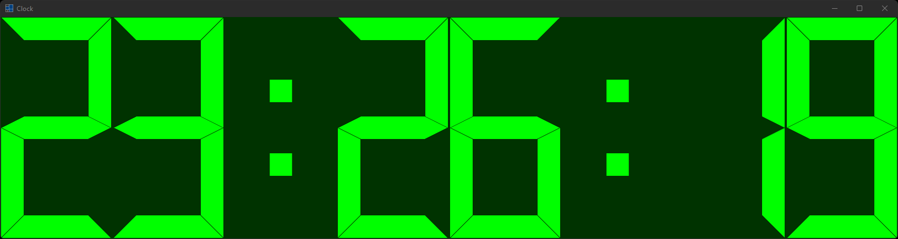

|
xtd
0.2.0
|
Loading...
Searching...
No Matches
clock.cpp
demonstrates the use of xtd::forms::lcd_label control.
- Windows


- macOS


- Gnome

#include <xtd/xtd>
auto main() -> int {
auto show_seconds = true;
auto clock_timer = forms::timer {};
clock_timer.interval(100_ms);
clock_timer.enabled(true);
auto form_main = form {};
form_main.text("Clock");
form_main.start_position(form_start_position::center_screen);
form_main.auto_size_mode(forms::auto_size_mode::grow_and_shrink);
form_main.auto_size(true);
auto label = lcd_label {};
label.parent(form_main);
label.height(403);
label.digit_spacing(4);
label.auto_size(true);
label.fore_color(color::lime);
label.back_color(color_converter::average(color::black, label.fore_color(), 0.20));
label.segment_style(segment_style::modern);
label.show_back_digit(false);
label.text(date_time::now().to_string("HH:mm:ss"));
clock_timer.tick += delegate_ {
auto now = date_time::now();
label.text(show_seconds ? now.to_string("HH:mm:ss") : now.to_string("HH:mm").replace(':', now.second() % 2 ? ' ' : ':'));
form_main.center_to_screen();
};
label.click += delegate_ {show_seconds = !show_seconds;};
application::run(form_main);
}
std::optional< xtd::forms::style_sheets::length > height() const noexcept override
Gets the height of the box.
#define delegate_
The declaration of a delegate type is similar to a method signature. It has a return value and any nu...
Definition delegate.hpp:924
Generated on Tue Nov 18 2025 10:22:35 for xtd by Gammasoft. All rights reserved.